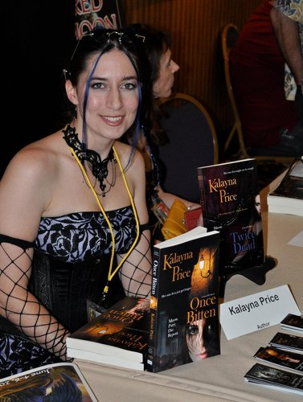

USA Today Bestselling author Kalayna Price writes the Alex Craft Novels, a new dark urban fantasy series from Roc, and the Novels of Haven from Bell Bridge Books. Her works have been translated into several languages and are available (or have been contracted for release) in the US, UK, Australia, New Zealand, France, Poland, Russia, and Germany. Kalayna draws her ideas from the world around her, her studies into ancient mythologies, and her obsession with classic folklore. Her stories contain not only the mystical elements of fantasy, but also a dash of romance, a bit of gritty horror, some humor, and a large serving of mystery. Kalayna is a member of SFWA and RWA, and an avid hula-hoop dancer who has been known light her hoop on fire. To find out more, please visit her at www.kalayna.com
Kalayna Price has always been an avid reader and dreamer. At ten she raided her father's fantasy fiction bookcase and her already active imagination went into hyperdrive. Her first love was for the epic adventures and mythical races and creatures of high fantasy, but she has always been drawn to things that go bump in the night. It is that darker side of fantasy where she currently devotes her words.
Kalayna is the USA Today Bestselling author of two dark urban fantasy series: the novels of Haven and the Alex Craft novels, both of which have been translated into several languages and are available all over the world.
The Haven Novels, consisting of ONCE BITTEN (January 2009), TWICE DEAD (February 2010), and THIRD BLOOD (August 2012), follow the story of Kita Nekai, a kitten shapeshifter on the run from her clan and responsibilities, who is turned into a vampire and entangled in the supernatural underworld. The Alex Craft novels consist thus far of GRAVE WITCH (October 2010), GRAVE DANCE (July 2011), and GRAVE MEMORY (July 2012). The novels follow series title character, Alex Craft, who is a broke magic-eye for hire who speaks to the dead. In the first book, Grave Witch, a case with a sexy reaper, a dark cop, and a ghost-silencing killer has more than Alex's rent on the line—it may cost her soul.
Kalayna draws her ideas from the world around her, her studies into ancient mythologies, and her readings of classic folklore. Her stories contain not only the mystical elements of fantasy, but also a dash of romance, a bit of gritty horror, some humor, and a large serving of mystery.
When not writing, she can be found reading for both pleasure and research, locked in her studio with a paintbrush, out in nature with her camera, or just about anywhere with a hula-hoop. Yeah, you read that correctly. Kalayna thinks hoop dance is about the most entertaining form of exercise on the planet, and has been known to hoop with fire.
(For press releases and large file photos, please click here)